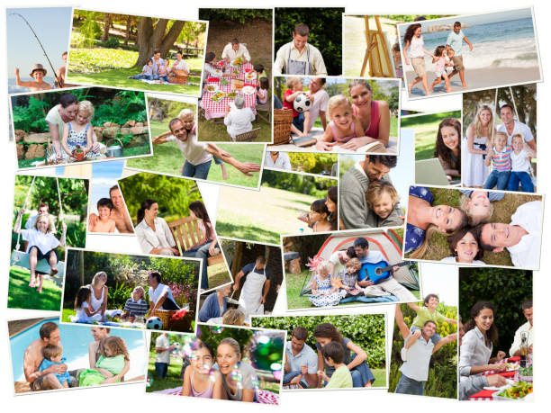

In chapter 22 by Widmer and Taniguchi's (2012) in the book "Successful Marriages and Families:
Proclamation Principles and Research Perspectives," "Wholesome Family Recreation: Building Strong
Families," it talks about how quality time and shared experiences are very important for building
a strong family bonds and romantic relationships. As Widmer and Taniguchi (2012) say, "meaningful
recreation does not just happen; it must be prepared for, cultivated, and privately defended" (p.
226). This shows how important quality interactions are over quantity. To improve the quality of
life for families, this shows how important it is to make plans and act on them. The chapter talks
about how outdoor activities like camping and mountain biking can bring families closer together by
requiring them to work together, talk to each other clearly, and help each other out. Throughout the
chapter, examples of these kinds of action are given. Not only do these kinds of activities make people
happy, but they also make it easier for them to work together to learn and solve problems, which helps
them grow as people and makes memories that will last a lifetime (Widmer & Taniguchi, 2012).
Putting these ideas to use in romantic relationships, Widmer and Taniguchi (2012) show how
important it is for two people to make an effort to have awesome moments together. These times of
connection can make a person happier in their relationship because they help to grow emotional closeness
and strengthen the bond. The authors Widmer and Taniguchi (2012) say that things that make both people
happy are linked to a more satisfying relationship. These things could be anything from small, everyday
jobs to big, important events in your life. This chapter gives you a plan for making deeper connections
and lasting fun by showing how planned, high-quality recreational activities are important for building
good family relationships and improving romantic relationships.
"Believable recreation does not just happen; it must be planned for, nurtured, and privately
protected" (Widmer and Taniguchi, 2012, p. 226). This stress how important it is to attempt
to do things that are enjoyable in order to build family bonds and promote personal growth. That
this happened shows how important it is for families to plan and enjoy things together that are fun
for everyone. The problem with today's technology is that it makes many families grow apart. This
worries a lot of families. In this chapter the authors’ said, "In general, we spend too much time
with electronic media and, as a result, become disconnected from one another" (Widmer & Taniguchi,
2012, p. 226). Also, families will have to work hard to get past these problems before they can fully
enjoy happiness. It's not appropriate for them to focus on activities that are only done for fun.
Actually, they should focus on things that help them connect with each other in a real way. Like,
traveling to new places, arts and crafts projects, storytelling and reading sessions, family meals
cooked together, and explore nature together. These activities could help families to collaborate
and work together through an open communication, and shared experience.
Both Widmer and Taniguchi (2012) talks about how the decisions people make about their free time
activities have a big effect on their quality of life, both as individuals and as a family. Many
people believe that "wholesome recreation strengthens families." The main goal of this chapter, as
mentioned on page 226, is to look into how the types of recreation we choose have a direct effect
on the quality of life that people and families enjoy. Some people think that if you want a more
satisfying life, you should focus on things that are hard and have a reason instead of things that
are just for fun. This can be seen in the difference between activities that are fun and those that
are useful: "activities that seems to be fun or enjoyable do not necessarily lead to a good life."
The difficult things that the Chore Kids had to deal with gave them order, taught them self-discipline,
and gave them a sense of who they were and what they had accomplished (p. 226). It's clear that the
authors want people to choose things for fun that also help them grow up, get stronger, and connect
with their families more. And they do this by showing how important shared events are for keeping families
together and for your own health.

My personal experience in real life
I remember our summer vacation with my family to spend a week in a cabin in the woods near
the sea instead of going to park like we usually do. We came up with the idea after realizing
that riding roller coasters at the park were fun, but they didn't really bring us together or
help us grow as people. We wanted something that would follow the ideas I had read about the chapter 22: things
that were fun but also helped people connect with each other and grow as people.
In the cabin it didn't have cell service or Wi-Fi, which made my brothers and me very angry at
first. But as the days went by, not having any technology distractions brought us ways of how our family
worked together. We started to do activities that help us to work hard to overcome challenges and gained
experience from it. For example, we went fishing near to the cabin in the wood and we went through some of the challenges that help us
to carefully focus on safety first. We spot sharks and luckily we gained experience from my father that
help us to fear the sharks away by splashing the water louder. In the chapter 22, "activities requiring
effort and overcoming challenges are more beneficial than those solely focused on pleasure" (Widmer &
Taniguchi, 2012, p. 226). These physical challenges pushed us to our limits and taught us how to be
strong and to overcome challenges by working together with our family.
Second activity we made with my family is gather around the fire in the evenings to cook meals and
tell stories. We learned more about each other in these times. My parents told us stories from their
childhood that showed us struggles and successes we had never heard of. We talked about our hopes, fears,
and goals, which let us open up in ways that the busyness of everyday life never let us.
This experience changed my life. It supported the idea that "wholesome recreation makes families stronger"
and that the kinds of recreation we choose "directly affect the quality of life for both individuals and
families" (Widmer & Taniguchi, 2012, p. 226). We were able to get back in touch with each other after
purposely cutting ourselves off from electronic media, even though it seemed hard at first. This shows
that "in general, we spend too much time with electronic media and, as a result, become disconnected
from one another" (Widmer & Taniguchi, 2012, p. 226). Being far from technologies helped us connect
with each other more deeply.
Eventually, me and my family learned how important it is to choose things that are fun, challenging,
and bring us together. Leisure activity helps people grow and improves relationships that needs to be
"prepared for, cultivated, and privately defended" (Widmer & Taniguchi, 2012, p. 226). This was a real
life example of this idea. The journey that made our family stronger, closer, and more aware of how
beautiful the world is and how beautiful our family is. It was a great example of how shared events
can bring people together and improve their health.
Achieving Quality Time and Shared experience - Hawkwins & Black
A talk called "Achieving Oneness in Marriage" was given by Alan J. Hawkins and Laura Waters Black. It gives deep understanding of what it means to spend valuable time together and share experiences within the holy bond of marriage. The speech gives very deep insights by comparing it to the power and unity of an arch. This comparison shows how a husband and wife, like the walls of an arch, become stronger and more stable when they join together, making their bond much stronger than it would be on its own.
Some suggestions in the speech said that to spend quality time in a marriage, one should put their partner's health and happiness first and make their marriage the most important thing in their life. Gordon B. Hinckley said that real happiness in marriage comes from putting your partner's happiness ahead of your own (Hawkins & Black, 2020). This means having "anxious concern for the comfort and well-being of one's companion," as President Hinckley expressed it. The teachings of the Church of Jesus Christ of Latter-day Saints say, "Thou shalt love thy wife with all thy heart, and shalt cleave unto her and none other" (Doctrine and Covenants 42:22). This principle is based on those teachings. It's important to make your spouse the most important thing in your life, as this verse says.
Making a promise to deal with life's problems together and support each other's growth and development is a big part of building shared experiences during a marriage. The talk talks about how couples can combine their individual identities into a "couple identity," also called a "we-dentity," while still encouraging each other to grow in their own hobbies and skills. Individuality isn't lost in this togetherness; in fact, it's strengthened by the love and support that people have for each other. During the speech, one of the married sisters said that because she loved her husband so much, she thought it was important to look out for his best interests. This shows how shared memories and helping each other are the most important parts of marital oneness (Hawkins & Black, 2020).
We are more determined to stay together, especially when things are hard, which makes the thought of spending quality time together and sharing experiences even stronger. As the speaker says, "Oneness means forever," this shows how important it is to be patient, mature, and want to solve problems together (Hawkins & Black, 2020). The speech also stresses that being married to one person means making a promise that lasts a lifetime.
To sum up, if you want to achieve oneness in your marriage through spending quality time together and sharing experiences, you must deeply commit to putting your partner's happiness first, dealing with problems together, and helping each other grow as individuals and as a group. As God planned, this journey toward oneness not only makes the bond between the couple stronger, but it also brings them a lot of happiness and satisfaction.